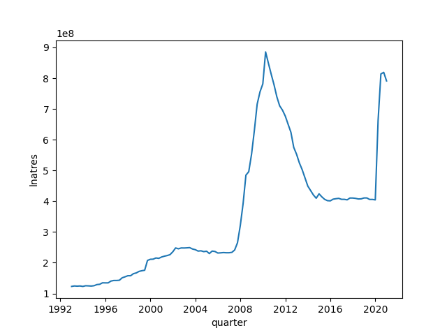
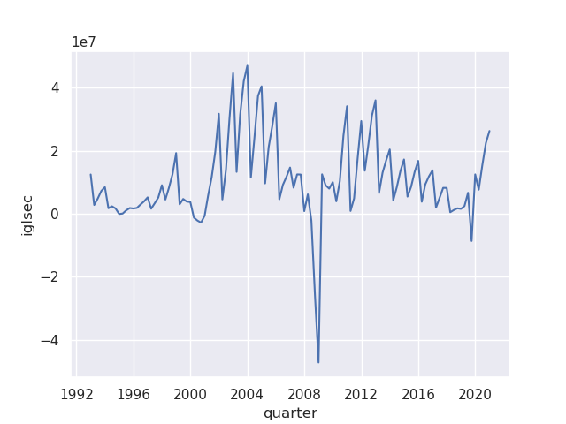
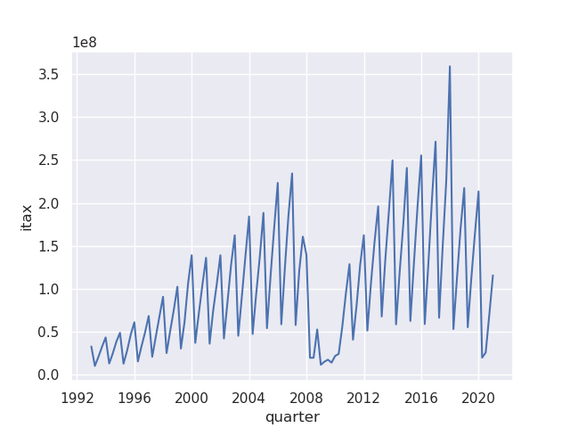
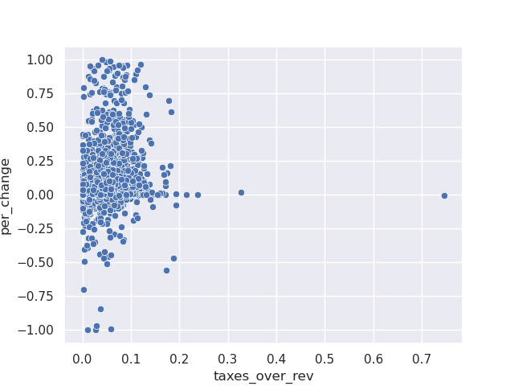

Loan-Loss Provisioning During COVID-19
Table of Contents
Loan-loss reserves appear on both a bank's balance sheet and income statement. On the balance sheet loan loss reserves are a contra-asset account which reduces the amount of loan assets by the expected amount of those loans which will not be repaid.
Changes to this contra-asset account are recorded in the income statement. If the loan loss reserves account is increased, then the amount of this increase is recorded as an expense on the income statement. Conversely, a reduction of the loan loss reserve account increases income.
Due to the effect on income, loan loss reserves have a long history of being used for earnings smoothing and tax mitigation strategy.
1 Data
For all variables available in the data set, see the list below. Variables are listed by their FDIC codes, which are available here.
2 Charts
2.1 Total Loan Losses per Quarter

Figure 1: Total Loan Loss Reserves by Quarter.
2.2 Securities Gains/Losses by Quarter

Figure 2: Total Securities Gains and Losses by Quarter.
2.3 Income Taxes by Quarter

Figure 3: Total Income Taxes by Quarter.
3 Is There a Correlation Between Taxes and Loan Loss Reserve Increases
Here we take a look at whether banks with higher taxes paid as a percent of revenue in Q4 2019 increased their loan losses at a faster rate from Q4 2019 to Q3 2020. We remove any bank with negative taxes, or percent change in loan losses not in the interval (-1, 1).
But this effect should only exist for banks with assets less than $500 million. See the below quote from this link.
The second factor is tax policy. Before the Tax Reform Act of 1986, loan loss provisions were essentially treated as tax deductible expenses. Since higher provisions reduced the bank’s tax liability, bank managers had the incentive to build up loan loss reserves by over-provisioning. In 1986, the Tax Reform Act tied the amount of tax deductible loan loss expenses to a bank’s actual charge-off experience for banks with assets over $500 million. The change in tax policy eliminates the “tax shelter” of over-provisioning for large banks. However, this also makes the tax treatment of loss provisioning backward-looking, while sound risk management requires it to be forward-looking.
So redo the analysis below filtering for only banks with less than $500 million in assets.
3.1 All Banks
>>> >>> >>> >>> >>> <class 'pandas.core.frame.DataFrame'> Int64Index: 3694 entries, 242 to 5193989 Data columns (total 2 columns): # Column Non-Null Count Dtype --- ------ -------------- ----- 0 taxes_over_rev 3694 non-null float64 1 per_change 3694 non-null float64 dtypes: float64(2) memory usage: 86.6 KB taxes_over_rev per_change taxes_over_rev 1.000000 0.131245 per_change 0.131245 1.000000
So we see a positive correlation of 0.13 between taxes and the change in loan loss reserves.

3.2 Small Banks (< $500 million)
109 430557.4
336 313344.4
1123 25530.4
1146 151862.8
1639 41228.8
...
1581704 46428.0
1581959 141382.2
1582068 102668.0
1583564 14389.8
1584239 407200.4
Name: asset5, Length: 5451, dtype: float64
>>> >>> >>> >>> >>> <class 'pandas.core.frame.DataFrame'> Int64Index: 2461 entries, 242 to 5193989 Data columns (total 2 columns): # Column Non-Null Count Dtype --- ------ -------------- ----- 0 taxes_over_rev 2461 non-null float64 1 per_change 2461 non-null float64 dtypes: float64(2) memory usage: 57.7 KB taxes_over_rev per_change taxes_over_rev 1.000000 -0.000141 per_change -0.000141 1.000000
3.3 Large Banks (> $500 million)
>>> >>> <stdin>:1: SettingWithCopyWarning: A value is trying to be set on a copy of a slice from a DataFrame. Try using .loc[row_indexer,col_indexer] = value instead See the caveats in the documentation: https://pandas.pydata.org/pandas-docs/stable/user_guide/indexing.html#returning-a-view-versus-a-copy
>>> >>> >>> >>> >>> <class 'pandas.core.frame.DataFrame'> Int64Index: 1189 entries, 505 to 5050028 Data columns (total 2 columns): # Column Non-Null Count Dtype --- ------ -------------- ----- 0 taxes_over_rev 1189 non-null float64 1 per_change 1189 non-null float64 dtypes: float64(2) memory usage: 27.9 KB taxes_over_rev per_change taxes_over_rev 1.000000 0.114114 per_change 0.114114 1.000000
4 Cross-Sectional Regression
>>> >>> <class 'pandas.core.frame.DataFrame'> Int64Index: 5967 entries, 1000052 to 999935 Data columns (total 88 columns): # Column Non-Null Count Dtype --- ------ -------------- ----- 0 cert 5967 non-null int64 1 quarter 5967 non-null datetime64[ns] 2 asset 5967 non-null float64 3 asset2 5967 non-null float64 4 asset5 5967 non-null float64 5 eq 5967 non-null float64 6 intinc 5967 non-null float64 7 eintexp 5967 non-null float64 8 nonii 5967 non-null float64 9 idothnii 5967 non-null int64 10 nonix 5967 non-null float64 11 epremagg 5967 non-null float64 12 IDEOTH 5967 non-null float64 13 idpretx 5967 non-null int64 14 iglsec 5967 non-null float64 15 itax 5967 non-null float64 16 ibefxtr 5967 non-null float64 17 extra 5967 non-null float64 18 netinc 5967 non-null float64 19 eqcdiv 5967 non-null float64 20 ILNFOR 164 non-null float64 21 EDEPFOR 164 non-null float64 22 dep 5967 non-null float64 23 lnreres 5967 non-null float64 24 LNRERSFM 5967 non-null float64 25 LNRERSF2 5967 non-null float64 26 lnreloc 5967 non-null float64 27 LNRERSF1 5967 non-null float64 28 obsdir 5967 non-null float64 29 intincy 5967 non-null float64 30 intexpy 5967 non-null float64 31 nimy 5967 non-null float64 32 noniiay 5967 non-null float64 33 nonixay 5967 non-null float64 34 ELNATRY 0 non-null float64 35 noijy 5967 non-null float64 36 roa 5967 non-null float64 37 roaptx 5967 non-null float64 38 roe 5967 non-null float64 39 ntlnlsr 5967 non-null float64 40 elnantr 5589 non-null float64 41 iderncvr 4449 non-null float64 42 eeffr 5967 non-null float64 43 astempm 5960 non-null float64 44 ERNASTR 0 non-null float64 45 lnatresr 5967 non-null float64 46 lnresncr 5469 non-null float64 47 nperfv 5967 non-null float64 48 nclnlsr 5967 non-null float64 49 LNLSNTV 0 non-null float64 50 lnlsdepr 5967 non-null float64 51 idlncorr 5966 non-null float64 52 DEPDASTR 0 non-null float64 53 eqv 5967 non-null float64 54 rbc1aaj 5967 non-null float64 55 rbc1rwaj 5967 non-null float64 56 rbcrwaj 5967 non-null float64 57 RBCT1CER 0 non-null float64 58 nim 5967 non-null float64 59 ifiduc 5967 non-null float64 60 iserchg 5967 non-null float64 61 igltrad 2102 non-null float64 62 esal 5967 non-null float64 63 ntlnls 5967 non-null float64 64 noij 5967 non-null float64 65 eqcrest 5967 non-null float64 66 rslnltot 5967 non-null float64 67 drlnls 5967 non-null float64 68 lnatres 5967 non-null float64 69 lnlsnet 5967 non-null float64 70 theindex_panel 5967 non-null object 71 born_vector 5967 non-null int64 72 de_novo 5967 non-null int64 73 fin_crisis_ind 5967 non-null int64 74 post_crisis_ind 5967 non-null int64 75 fail_date 15 non-null object 76 fail_indicator 5967 non-null int64 77 days_to_failure 15 non-null float64 78 stalp 5967 non-null object 79 cbsa_metro 3519 non-null float64 80 zip 5967 non-null int64 81 cbsa_metro_name 3519 non-null object 82 regagnt 5967 non-null object 83 fdicdbs 5967 non-null object 84 fed 5967 non-null object 85 taxes_over_rev_x 5967 non-null float64 86 taxes_over_rev_y 5967 non-null float64 87 per_change 5967 non-null float64 dtypes: datetime64[ns](1), float64(71), int64(9), object(7) memory usage: 4.1+ MB
>>> >>> <stdin>:1: SettingWithCopyWarning: A value is trying to be set on a copy of a slice from a DataFrame. Try using .loc[row_indexer,col_indexer] = value instead See the caveats in the documentation: https://pandas.pydata.org/pandas-docs/stable/user_guide/indexing.html#returning-a-view-versus-a-copy
Traceback (most recent call last):
File "<stdin>", line 1, in <module>
File "/usr/lib/python3.9/site-packages/sklearn/linear_model/_base.py", line 518, in fit
X, y = self._validate_data(X, y, accept_sparse=accept_sparse,
File "/usr/lib/python3.9/site-packages/sklearn/base.py", line 433, in _validate_data
X, y = check_X_y(X, y, **check_params)
File "/usr/lib/python3.9/site-packages/sklearn/utils/validation.py", line 63, in inner_f
return f(*args, **kwargs)
File "/usr/lib/python3.9/site-packages/sklearn/utils/validation.py", line 814, in check_X_y
X = check_array(X, accept_sparse=accept_sparse,
File "/usr/lib/python3.9/site-packages/sklearn/utils/validation.py", line 63, in inner_f
return f(*args, **kwargs)
File "/usr/lib/python3.9/site-packages/sklearn/utils/validation.py", line 663, in check_array
_assert_all_finite(array,
File "/usr/lib/python3.9/site-packages/sklearn/utils/validation.py", line 103, in _assert_all_finite
raise ValueError(
ValueError: Input contains NaN, infinity or a value too large for dtype('float64').
<class 'pandas.core.frame.DataFrame'>
Int64Index: 5967 entries, 1000052 to 999935
Data columns (total 10 columns):
# Column Non-Null Count Dtype
--- ------ -------------- -----
0 intincy 5967 non-null float64
1 nim 5967 non-null float64
2 asset5 5967 non-null float64
3 roa 5967 non-null float64
4 intexpy 5967 non-null float64
5 ntlnlsr 5967 non-null float64
6 LNLSNTV 0 non-null float64
7 rbc1rwaj 5967 non-null float64
8 iserchg 5967 non-null float64
9 per_change 5967 non-null float64
dtypes: float64(10)
memory usage: 512.8 KB
array([ 6.08003420e-08, -1.27424821e-09, 1.76338988e-04])
Parsed with column specification:
cols(
rssd = [32mcol_double()[39m,
intincy = [32mcol_double()[39m,
nim = [32mcol_double()[39m,
asset5 = [32mcol_double()[39m,
roa = [32mcol_double()[39m,
intexpy = [32mcol_double()[39m,
ntlnlsr = [32mcol_double()[39m,
LNLSNTV = [33mcol_logical()[39m,
rbc1rwaj = [32mcol_double()[39m,
iserchg = [32mcol_double()[39m,
per_change = [32mcol_double()[39m
)
Call:
lm(formula = per_change ~ intincy
nim
asset5
roa
intexpy
ntlnlsr
rbc1rwaj
iserchg, data = reg_data)
Residuals:
Min 1Q Median 3Q Max
-1.05743 -0.06874 -0.02071 0.03534 0.96339
Coefficients:
Estimate Std. Error t value Pr(>|t|)
(Intercept) -6.979e-01 2.299e-02 -30.357 < 2e-16 ***
intincy 1.284e-02 2.116e-03 6.069 1.37e-09 ***
nim 9.169e-09 2.048e-09 4.478 7.68e-06 ***
asset5 5.619e-02 1.398e-03 40.198 < 2e-16 ***
roa 8.167e-05 2.578e-04 0.317 0.751399
intexpy -1.214e-02 5.092e-03 -2.384 0.017153 *
ntlnlsr 3.088e-03 4.782e-03 0.646 0.518455
rbc1rwaj 2.126e-04 2.314e-04 0.919 0.358263
iserchg -7.240e-08 2.102e-08 -3.444 0.000576 ***
---
Signif. codes: 0 ‘***’ 0.001 ‘**’ 0.01 ‘*’ 0.05 ‘.’ 0.1 ‘ ’ 1
Residual standard error: 0.1536 on 5958 degrees of freedom
Multiple R-squared: 0.2916, Adjusted R-squared: 0.2907
F-statistic: 306.6 on 8 and 5958 DF, p-value: < 2.2e-16
5 Variables Available in Panel
<class 'pandas.core.frame.DataFrame'> RangeIndex: 1584313 entries, 0 to 1584312 Data columns (total 86 columns): # Column Non-Null Count Dtype --- ------ -------------- ----- 0 rssd 1584313 non-null int64 1 cert 1584313 non-null int64 2 quarter 1584313 non-null datetime64[ns] 3 asset 1584313 non-null float64 4 asset2 1584313 non-null float64 5 asset5 1584313 non-null float64 6 eq 1581992 non-null float64 7 intinc 1581992 non-null float64 8 eintexp 1581992 non-null float64 9 nonii 1581992 non-null float64 10 idothnii 1584313 non-null int64 11 nonix 1581992 non-null float64 12 epremagg 1581992 non-null float64 13 IDEOTH 1583178 non-null float64 14 idpretx 1584313 non-null int64 15 iglsec 1581992 non-null float64 16 itax 1581992 non-null float64 17 ibefxtr 1581992 non-null float64 18 extra 1581992 non-null float64 19 netinc 1581992 non-null float64 20 eqcdiv 1581992 non-null float64 21 ILNFOR 34684 non-null float64 22 EDEPFOR 34684 non-null float64 23 dep 1584311 non-null float64 24 lnreres 1582640 non-null float64 25 LNRERSFM 1458237 non-null float64 26 LNRERSF2 1458237 non-null float64 27 lnreloc 1582640 non-null float64 28 LNRERSF1 1389061 non-null float64 29 obsdir 1390777 non-null float64 30 intincy 1581924 non-null float64 31 intexpy 1581924 non-null float64 32 nimy 1581924 non-null float64 33 noniiay 1581992 non-null float64 34 nonixay 1581992 non-null float64 35 ELNATRY 0 non-null float64 36 noijy 1581992 non-null float64 37 roa 1581992 non-null float64 38 roaptx 1581992 non-null float64 39 roe 1581992 non-null float64 40 ntlnlsr 1570725 non-null float64 41 elnantr 1377260 non-null float64 42 iderncvr 1091500 non-null float64 43 eeffr 1581671 non-null float64 44 astempm 1579021 non-null float64 45 ERNASTR 0 non-null float64 46 lnatresr 1569966 non-null float64 47 lnresncr 1438828 non-null float64 48 nperfv 1581990 non-null float64 49 nclnlsr 1572278 non-null float64 50 LNLSNTV 0 non-null float64 51 lnlsdepr 1583122 non-null float64 52 idlncorr 1576590 non-null float64 53 DEPDASTR 0 non-null float64 54 eqv 1581992 non-null float64 55 rbc1aaj 1581990 non-null float64 56 rbc1rwaj 1549826 non-null float64 57 rbcrwaj 1571274 non-null float64 58 RBCT1CER 0 non-null float64 59 nim 1581992 non-null float64 60 ifiduc 1074049 non-null float64 61 iserchg 1397165 non-null float64 62 igltrad 1179267 non-null float64 63 esal 1581992 non-null float64 64 ntlnls 1581992 non-null float64 65 noij 1581992 non-null float64 66 eqcrest 1230158 non-null float64 67 rslnltot 1581992 non-null float64 68 drlnls 1581992 non-null float64 69 lnatres 1581990 non-null float64 70 lnlsnet 1584311 non-null float64 71 theindex_panel 1584313 non-null object 72 born_vector 1584313 non-null int64 73 de_novo 1584313 non-null int64 74 fin_crisis_ind 1584313 non-null int64 75 post_crisis_ind 1584313 non-null int64 76 fail_date 110833 non-null object 77 fail_indicator 1584313 non-null int64 78 days_to_failure 110833 non-null float64 79 stalp 1584313 non-null object 80 cbsa_metro 984982 non-null float64 81 zip 1584313 non-null int64 82 cbsa_metro_name 984982 non-null object 83 regagnt 1584313 non-null object 84 fdicdbs 1584313 non-null object 85 fed 1584313 non-null object dtypes: datetime64[ns](1), float64(68), int64(10), object(7) memory usage: 1.0+ GB